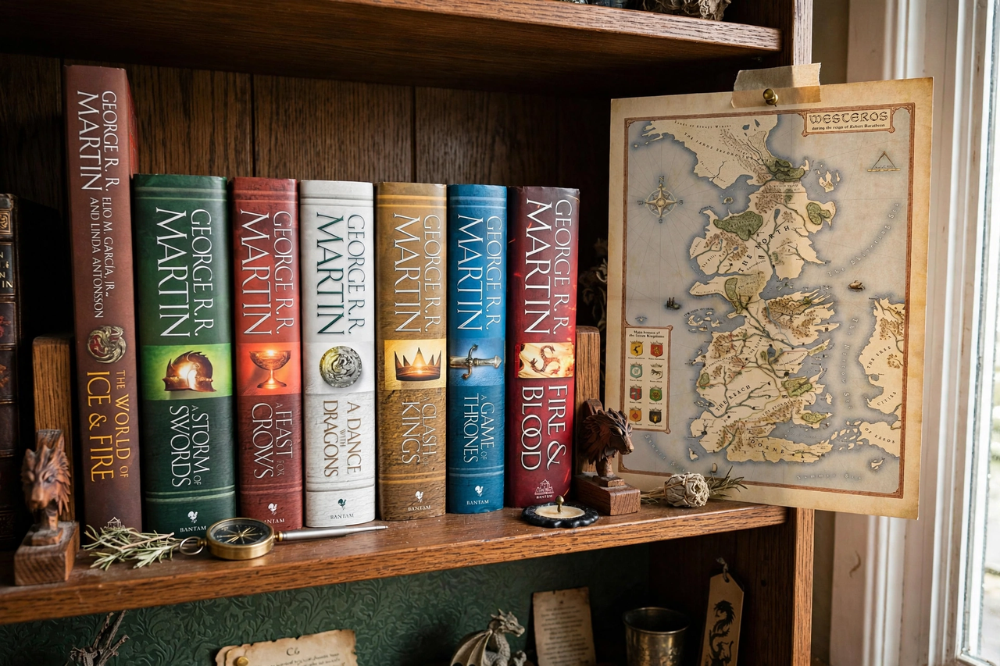

A Song of Ice and Fire
From Wikipedia, the free encyclopedia

A Song of Ice and Fire is a series of Epic fantasy novels by the American author George R. R. Martin. Beginning with A Game of Thrones (1996), five novels have appeared, with two more — The Winds of Winter and A Dream of Spring — long forthcoming. The series, set mainly on the fictional continent of Westeros, follows a dynastic civil war among noble houses as an ancient supernatural enemy returns after millennia. It was adapted by HBO as Game of Thrones (2011–2019), which became one of the most popular television series ever made.
Books
The published sequence: A Game of Thrones (1996), A Clash of Kings (1998), A Storm of Swords (2000), A Feast for Crows (2005) and A Dance with Dragons (2011). Each chapter is told from a rotating character's limited point of view. Companion works include the novellas of Tales of Dunk and Egg, the history Fire & Blood (2018, source of the series House of the Dragon) and the atlas The World of Ice & Fire (2014).
Story and themes
After the death of King Robert Baratheon, rival claimants plunge the Seven Kingdoms into the War of the Five Kings, while the exiled Daenerys Targaryen raises dragons in the east and the Night's Watch faces the White Walkers beyond the Wall. Martin's world — inspired by the Wars of the Roses, Hadrian's Wall and medieval history — is noted for political realism, moral ambiguity, unreliable narrators and the deaths of major characters, rejecting the consolations of traditional heroic fantasy.
Reception and the unfinished ending
The books have sold over 90 million copies and been translated into dozens of languages. The television adaptation outran the novels after season five and concluded the story in 2019 to a divided reception; Martin has repeatedly missed announced dates for The Winds of Winter, making the series the most famous unfinished work in modern popular literature — a fact he discusses with rueful candour.